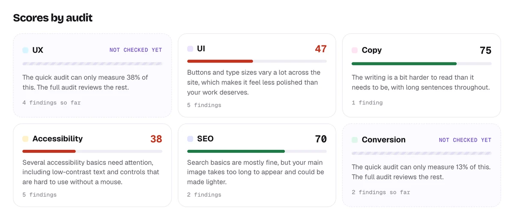
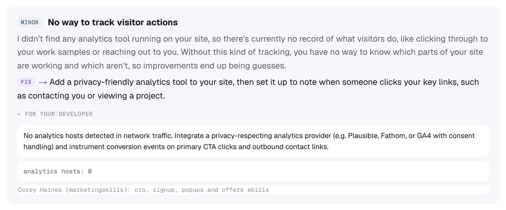

A small business can’t easily get a designer to review its website. Free SEO tools only check whether Google can read it. Juno gives owners that kind of review, with the fixes in plain words. It was also my test of how far one designer can take a real product alone.
Outcome
Juno is live at junoknows.design. I designed and built it in 4 days with Claude Code. It reviews a website against a rubric of 68 checks. My own site went from 48 to 99 over three rounds of fixes.
4Days to build
68Checks in the rubric
48→99My site’s score out of 100
My part
I designed and built Juno’s audit engine, scoring, report and website. I designed straight into code with Claude Code. The rubric is code too: every check has a question, a pass line, a weight and a source.
Skills
Design engineering
Rapid prototyping
AI in the loop
UX design
UI design
Mobile design
Built with
Figma, Claude Code, Next.js, React, TypeScript, Tailwind, Claude API
A finding without evidence never moves the score. Neither does a verdict Juno isn’t sure of. Both are set aside for a person to confirm. The overall score shows how much was checked. Where too little of an audit was checked, its tile says “Not checked yet” and shows no score.

2/3
Two readers for every finding
The owner gets each finding in plain words, with the fix. That version has no code, colour codes or acronyms. Below it, a folded note gives their developer the exact selectors and values.

3/3
What to fix first
Each finding is ranked by how serious it is and how widely it shows. After the scores, the report picks the three that matter most, no more than two from one audit. When two findings matter equally, the quicker fix comes first.